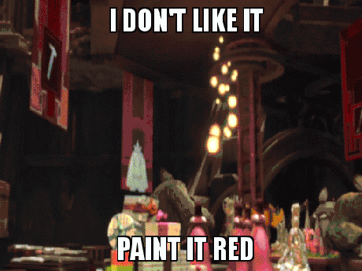
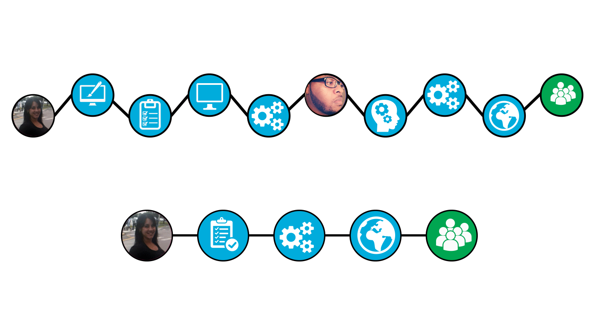

dev ops
2014
introductions
development & support team
Javier Carmona Digital Platform Developer
Deltrie Allen Digital Platform Developer & Support
Seth Benjamin Lead Mobile & Interactive Developer
Eduardo L. Martinez Digital Platform & Integrations Manager
development roadmap
to avoid this...
development goals
-
On-boarding Telemundo San Antonio, Boston and McAllen
-
Mobile application feature parity
-
Increase iOS & Android application downloads
-
In-house video workflow adoption
-
CMS transition & on-boarding
platforms we support

development roadmap
-
Mobile application homescreen update
-
Mobile website re-launch
-
Upgrade and integrate video and live stream protocols
-
Transition to single-instance Clickability CMS
-
Creation of in-house Feedloader solution
mobile
web & native
and they're pretty nice!
native app showcase
android & ios
mobile web & native app
-
#SoLoMo-Vi!
-
Updated user experience for our viewsers
-
Increase in application session lengths (~24%)
-
Android user downloads out-perform or rivals iOS
-
Push notification updates (Articles, Sections, Cross-Promotion, & URLs)
-
Flexible mobile web homepage content experiences
-
Future updates
support & tools
feature workflow
support & tools
-
Empowering editorial through flexibility
-
Sharing the knowledge & sharing the load
-
Expanding our platform while prioritizing content
-
Creation without delays
-
Supporting our platform tools
cms
celerity - velocity framework
content flexibility
-
Consolidated and flat content hierarchy
-
Support for strategic content & sales initiatives
-
Separation of concerns (Backend vs. Frontend)
-
Easily interpolated content pieces.
-
Layout & navigation flexibility
-
Future developments
content modules
feedloader
-
In-house content ingestion & object creation solution.
-
National content object retargeting workflow.
-
Syndicated content partnerships are now possible.
-
Automatic video ingestion, content object creation and content targeting. (*)
-
In-house consumer generated media submission queue, approval and ingestion. (*)
(*) Available post-launch.
celerity - velocity framework
-
Introducing Celerity: the D.S.L. for the D.S.L.!
-
Performance, performance, performance!
-
Faster development cycles
-
Loosely MVP (Model, View, Presenter) based
-
Contextual awareness; keeping things in check
-
Dynamic configurations
-
Smaller learning curves for new hires
making the world a better place.